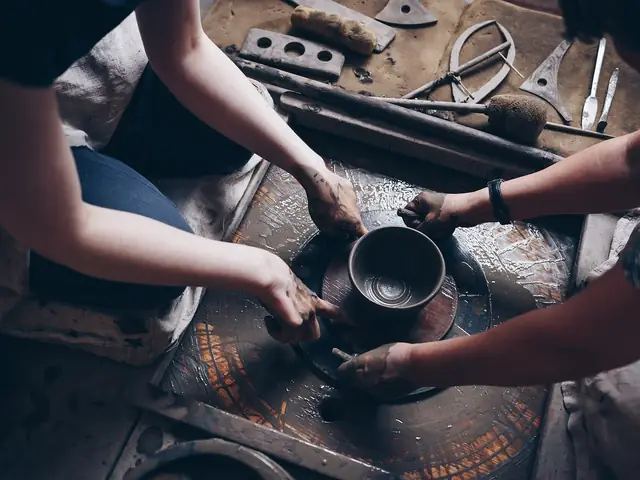

Atelier de céramique · Nantes
Des céramiques tournées à la main, pour tous les jours.
Tasses, bols et vases en grès, émaillés dans notre atelier nantais. Petites séries, pièces uniques, expédiées sous 48 h dans un emballage sans plastique.
- Fait main en Loire-Atlantique
- Livraison offerte dès 60 €
- Retours sous 30 jours
- Zéro plastique dans nos colis
La boutique
Aucune pièce ne correspond à ces critères.

L'atelier
De la terre à votre table, sans intermédiaire.
Chaque pièce est tournée, tournassée puis émaillée à la main, avant deux cuissons dont la dernière à 1 280 °C. Nos émaux sont préparés à l'atelier, certains à partir de cendres de bois : c'est ce qui donne ces nuances qui changent d'une pièce à l'autre.
Le grès est vitrifié, donc solide, non poreux et compatible lave-vaisselle et micro-ondes.
En savoir plus